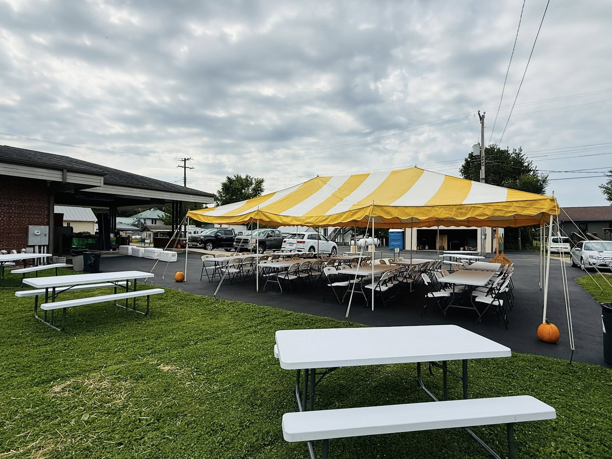
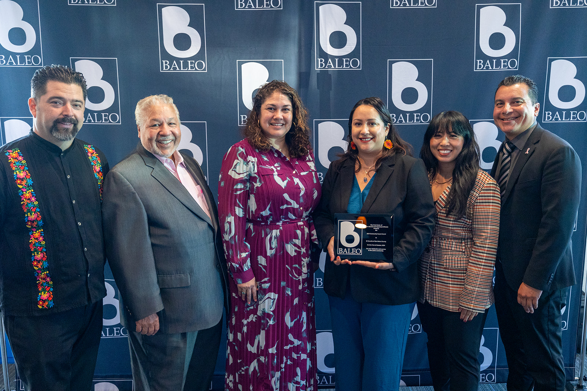

Kippers Heartfelt Foundation Co. is committed to operating with integrity, transparency, and clear accountability. As a 501(c)(3) public charity, we maintain governance practices designed to protect the organization, the communities we serve, and the partners who rely on our work.
Kippers Heartfelt Foundation Co. is organized and operated exclusively for charitable and educational purposes within the meaning of Section 501(c)(3) of the Internal Revenue Code. Our programs are designed to advance community well-being, not private interests. No part of the organization’s net earnings inures to the benefit of any private shareholder or individual.
The board provides strategic direction, approves the annual budget, and oversees the performance of programs and key leadership. Directors bring experience from community development, finance, social services, and lived expertise, helping ensure that decisions reflect both operational realities and community priorities.
Formal policies guide conflicts of interest, financial controls, document retention, and whistleblower protections. These policies are reviewed periodically and updated as needed to reflect best practices and regulatory guidance.
We separate restricted and unrestricted funds and maintain internal reporting that tracks how resources are used across programs. Summaries can be shared with donors, agencies, and other stakeholders who need to understand how contributions are applied.
Exempt status: 501(c)(3) public charity.
Business ID: 10282427
Principal office: 2521 E. Hiawatha Dr., Wasilla, AK 99654
Primary contact: contact@kippersheartfelt.identova0201.io.vn • +13074102794
Verification requests from agencies, donors, and partners may reference the organization name and EIN. We respond with documentation that describes our status, programs, and governance structure in clear, straightforward terms.
